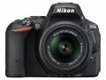

D5500（产品详情）是尼康首款搭载可翻转触摸显示屏，并且内置Wi-Fi®功能的尼康数码单反相机。通过约2,416万有效像素、尼康DX格式CMOS传感器和EXPEED 4影像处理器的配合，D5500可提供优异的图像品质和丰富的还原能力，实现出色的细节再现。
5 非常满意 因为我就是要选一款轻的单反。 目前没有比他更轻的了。
便宜，轻，功能足够用（相对于无反） 可以随时放入包包中
有人可能不喜欢他那么轻，塑料感，玩具感
好用
便宜，轻，方便
电池不耐用